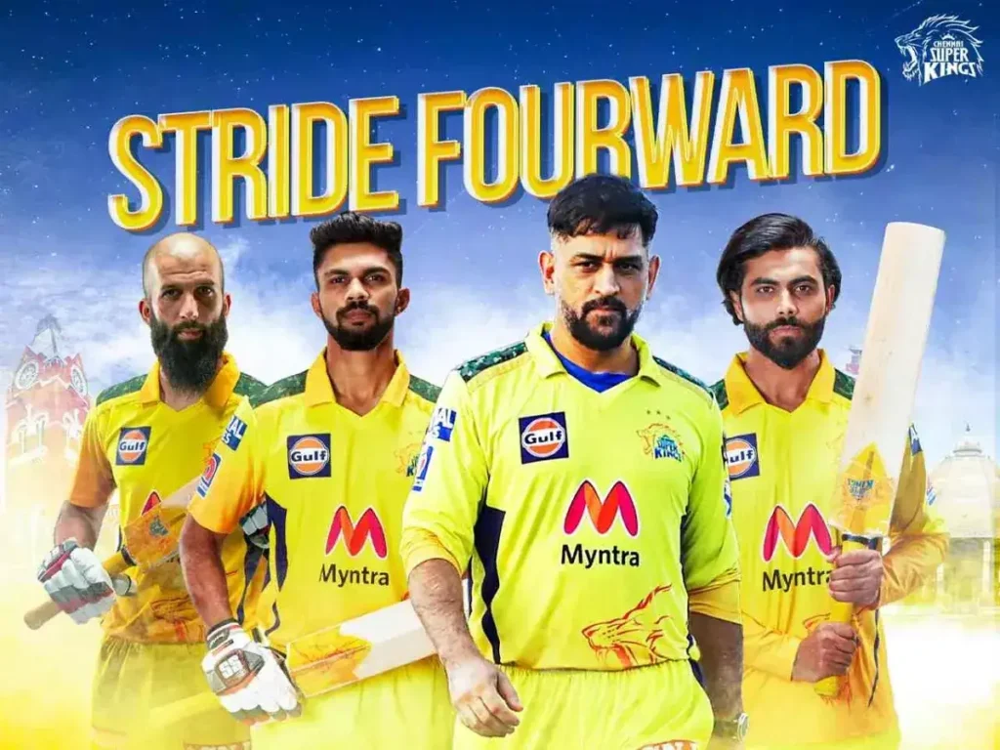

MS Dhoni
MS Dhoni added another feather to his cap in 2021 edition of the league as CSK won their fourth title. A batting powerhouse, MS Dhoni possesses the ability to destroy different bowling attacks on his own. The calmness and composure in his demeanor along with a sharp cricketing brain accounts for a lethal combination on the cricketing field.
Click the buttonRavindra Jadeja
Ravindra Jadeja's captaincy debut ended in the worst possible manner as he had to let of the responsibility mid season after getting the chance to lead defending Indian Premier League (IPL) champions Chennai Super Kings (CSK) in a lineup that had former CSK and Team India skipper MS Dhoni
Click the buttonSuresh Raina
Suresh Raina is a left-handed middle order batsman who plays for the Indian cricket team and Uttar Pradesh in the domestic competitions. Born in Ghaziabad, Raina is also an efficient add with his off-spin bowling and a big asset in the field.Suresh Raina also announced his international retirement on the same day as Dhoni did.
Click the buttonIPL 2023
From April to June 2023, India will host the 16th edition of the Indian Premier League.
The auction for the IPL 2023 is set to take place in February 2023. Chennai Super Kings (CSK), the defending champions, are having a bad season. With only four wins from league matches, the men in yellow are in second worst place in the IPL 2022 standings.
History of IPL!
In September 2007, the Board of Control for Cricket in India (BCCI) announced the establishment of the Indian Premier League, a Twenty20 competition to be started in 2008.Three of the five centuries scored in the 2018 season were by players belonging to the Chennai Super Kings (Ambati Rayudu 100* and Shane Watson 106, 117*). The Super Kings also became the first team to defeat an opposing team (Sunrisers Hyderabad) four times in a single seasonIn January 2008, the BCCI unveiled the owners of eight city-based franchises. Ahead of the players mega auction, Chennai Super Kings retained Mahendra Singh Dhoni, Suresh Raina & Ravindra Jadeja. Additionally, Faf du Plessis and Dwayne Bravo were brought back into the side using RTM. The return of the Super Kings to the IPL was the cause of a large amount of celebration and fanfare amongst the fans, with a crowd of more than 10,000 turning up for the practice sessions held at the M. A. Chidambaram Stadium in Chennai before the start of the tournamentThe Chennai franchise was sold to the India Cements for $91 million, making it the fourth most expensive team in the league behind Mumbai, Bangalore and Hyderabad.[8] India Cements acquired the rights to the franchise for 10 years. the Champions League Twenty20 on 22 January 2015
Readmore..chennaiipl
Chennai, on the Bay of Bengal in eastern India, is the capital of the state of Tamil Nadu. Chennai's campaign started off with a thrilling one wicket win over the Mumbai Indians in the first match of the season thanks to an unbeaten 68 off 30 balls from Dwayne Bravo.[58] Playing their first home game in Chennai, the Kings successfully managed to chase down a target of 202 set by the Kolkata Knight Riders, aided by a quickfire half-century by Sam BillingsThe city is home to Fort St. George, built in 1644 and now a museum showcasing the city’s roots as a British military garrison and East India Company trading outpost, when it was called Madras.
 Readmore..